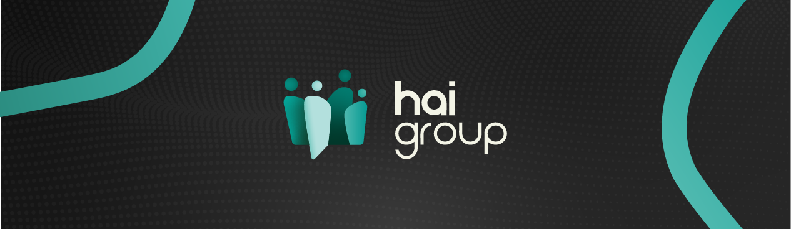
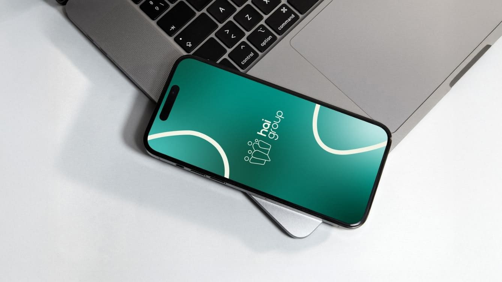
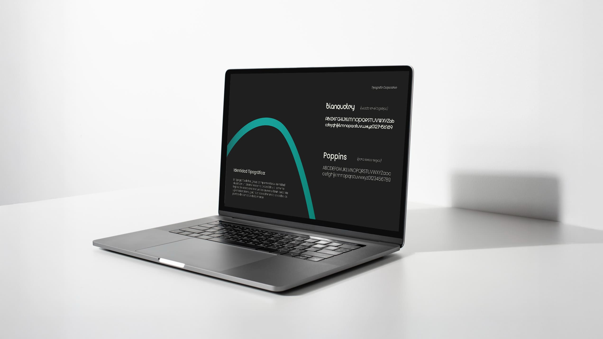
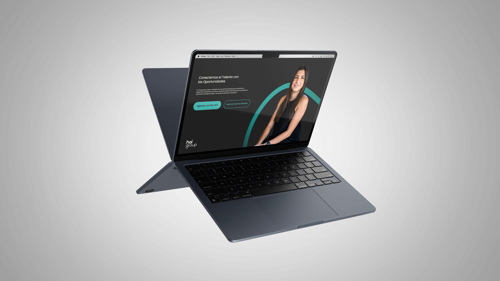
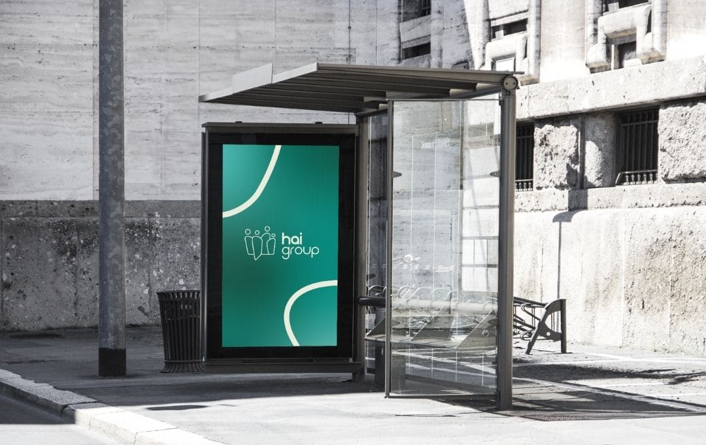

Diseño integral de marca y lineamientos comunicacionales para una empresa dedicada a conectar talento y oportunidades a través de soluciones en servicios transitorios, outsourcing y selección especializada.

Empresa de outsourcing,
y reclutamiento
2024
Identidad visual y
presentación comercial
Illustrator, Photoshop
HAI Group es una empresa enfocada en la gestión de personas, servicios transitorios, outsourcing y recruitment, cuyo propósito central es conectar talento con oportunidades reales. Su identidad debía transmitir cercanía, profesionalismo y una visión moderna del trabajo, poniendo en valor conceptos como confianza, agilidad y relaciones humanas auténticas.
Previo al rediseño, la marca carecía de una estructura visual clara y de un relato consistente, dificultando su posicionamiento en un mercado altamente competitivo y saturado por identidades tradicionales.
La empresa necesitaba una identidad que se diferenciara dentro del sector de servicios laborales, donde predominan marcas rígidas, impersonales y poco memorables. Existía la oportunidad de construir un sistema visual que reflejara la esencia de HAI Group: un puente humano entre personas y empresas, capaz de transmitir claridad, orden y conexión.
El desafío principal fue desarrollar una estética que pudiera adaptarse a múltiples servicios (ST, RPO, BPO y outsourcing) manteniendo consistencia, jerarquía y una línea editorial clara.




La propuesta se fundamenta en un enfoque humano y moderno: un sistema visual limpio, ordenado y flexible, capaz de comunicar de forma clara los diferentes servicios de HAI Group sin perder cohesión de marca.
El diseño se basa en tres pilares: Cercanía: Un lenguaje visual que refleja el propósito de HAI: cada conexión comienza con un “hola”. Confianza: Composición estable, tipografías claras y un uso del color que transmite profesionalismo. Versatilidad: Un sistema modular que permite comunicar los distintos servicios (ST, RPO, BPO y outsourcing) de forma diferenciada pero unificada.
Se diseñaron plantillas, gráficas, diagramación de presentaciones y piezas informativas que permiten que la marca se despliegue con claridad en múltiples contextos digitales y corporativos.